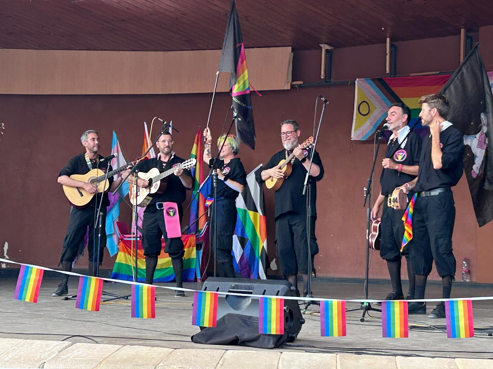
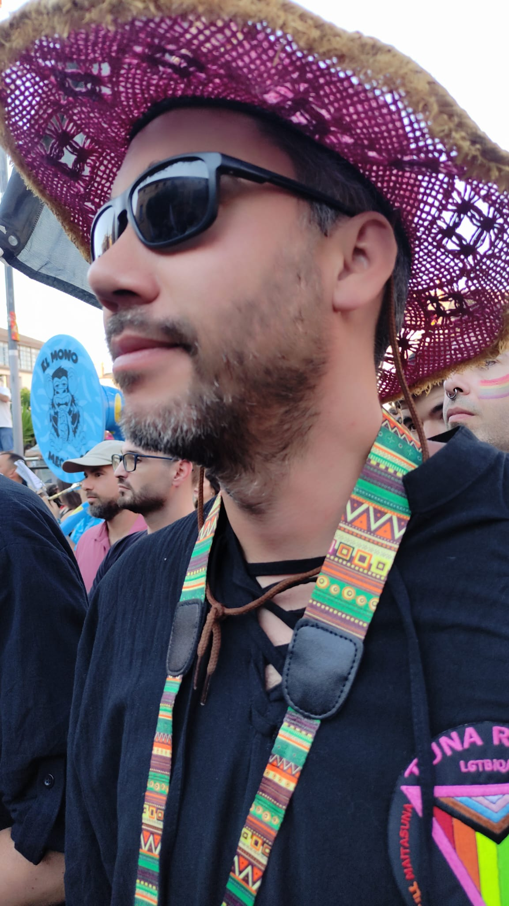
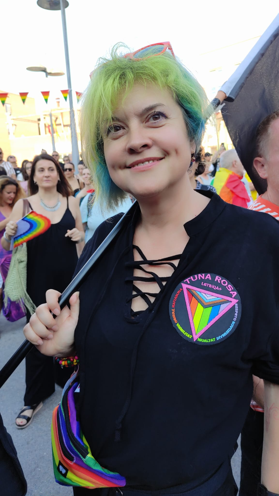
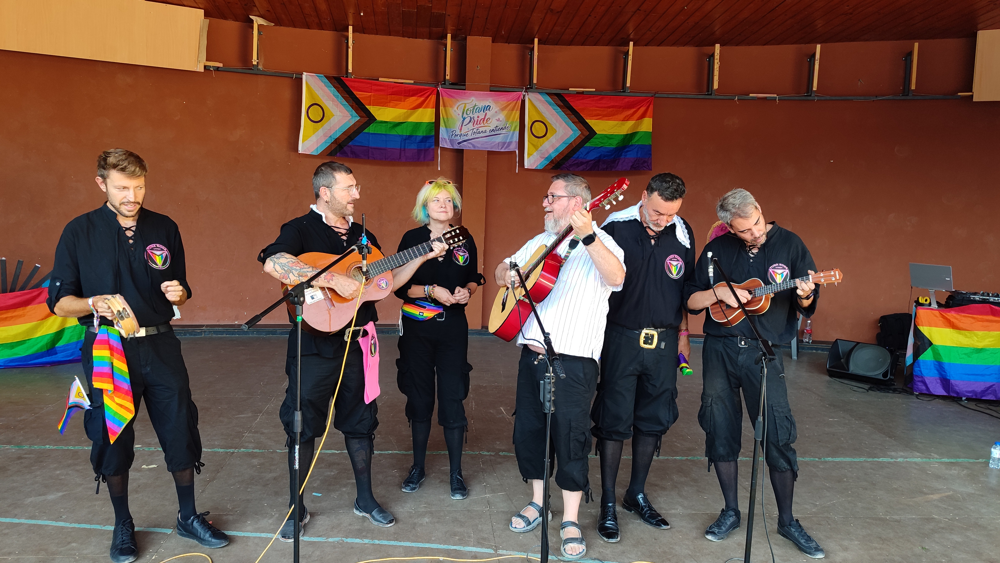

Totana no se rinde: Orgullo, música y resistencia




Totana no se rinde: un grito de orgullo que retumbó en toda España
El 5 de julio de 2026, Totana vivió una jornada histórica. Frente a los intentos de invisibilizar al colectivo LGTBIQA+, la respuesta ciudadana fue masiva: el primer Orgullo de la historia de Totana reunió a miles de personas en defensa de la diversidad. Y Tuna Rosa estuvo allí, llevando música, presencia y compromiso.
La respuesta fue masiva
Entre 1.200 y 1.500 personas llenaron las calles, con asistencia de vecinos de Totana, gente de la Región de Murcia y participantes llegados desde otras comunidades. La marcha arrancó a las 19:00 en el Centro Sociocultural La Cárcel y tuvo un enfoque inclusivo, con un primer tramo sin megafonía para cuidar a personas con sensibilidad acústica.
Tuna Rosa: orgullo y resistencia cultural
En el tramo más festivo de la movilización, Tuna Rosa se sumó con fuerza. Cada canción fue una forma de reivindicar visibilidad, dignidad y comunidad. Nuestra presencia en Totana fue un acto de resistencia cultural y una afirmación clara: la diversidad no se esconde ni se negocia.
Toda España es totanera
Al llegar a la Plaza del Ayuntamiento, la lectura del manifiesto y el clamor de la gente convirtieron la jornada en un mensaje que trascendió lo local. El cierre en el Auditorio Marcos Ortiz, con artistas actuando de forma solidaria, reforzó una idea compartida: la cultura también es una herramienta de defensa de derechos.
Un muro de contención
Este Orgullo se planteó como un muro de contención frente al odio, y Tuna Rosa formó parte de ese muro. Subir al escenario de Totana fue plantarnos con la música por delante y recordar que la diversidad no es una concesión: es un derecho.
Totana no se rinde. Tuna Rosa estuvo allí para demostrarlo.